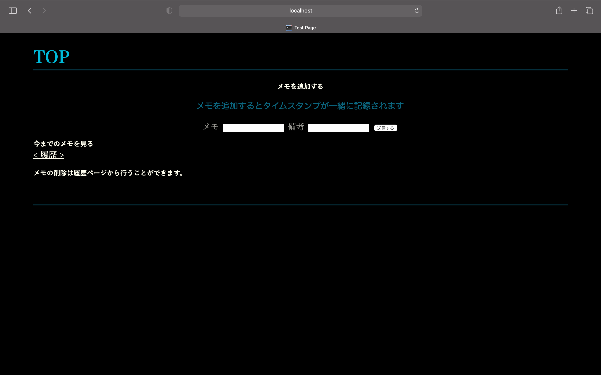
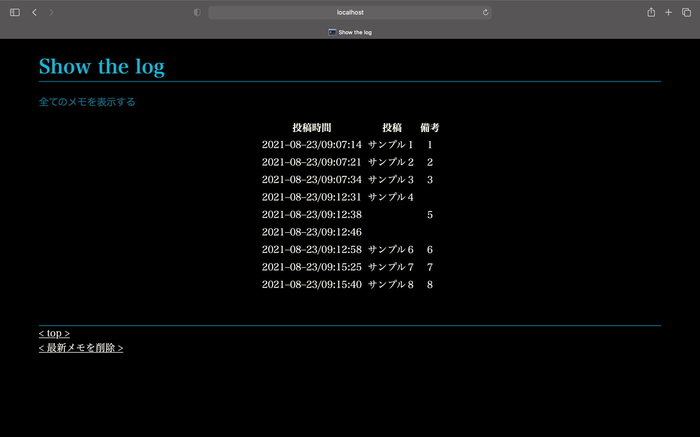

Hello,World!
作ったもの
このページでは自分が試したことや作成したものを紹介しようと思います。
1.Docker上でFlaskを使ったメモアプリケーション
DockerでUbuntuとFlask-python3の仮想環境を構築して、その環境上でFlaskアプリを作成してみました。
pythonのフレームワークであるFlaskとテンプレートエンジンのjinja2を使って作成しました。
このメモアプリはちょっとした作業メモの内容と備考をメモ作成時のタイムスタンプ一と緒にテキストファイルに保存、表示します。
ただし、改行などは行えずログファイルのようなイメージで1行のみをシンプルにメモします。
書き込みと読み込みする上でのテキストファイル内の記述のルールは、要素ごとにコンマを入れ終わりに改行をすることで区別しています。
削除はプログラムでは1行ずつしか行えません。
アプリケーションを立ち上げた後はローカルホストにブラウザからアクセスして使用します。
以下の画像はTOPのメモ入力画面と、今までのメモを全て表示する履歴画面です。


制作してみて
初めてflaskとそれに付随するシステムなどを使ってみました。学習サイトを参考に機能の追加や、ページのレイアウト、サイトマップを自分で考えながら作りました。
あまり出来栄えや見栄えがよろしくないのですが、授業外で自分で何か制作物を作ることができてよかったです。
テキストファイルの読み込みと書き込みは簡単に行えたのですが、直近のメモを1行だけ削除することを実装しようとした時は少し手こずりました。
今回はLinuxコマンドをpythonコードに直接埋め込めるOSモジュールを使用して解決しました。
C言語だと大体想像がつくのですが、python3は普段書かず、文法を自分で勉強した程度だったので色々と勉強になることが多かったです。
今回のアプリケーションは自分のPC内で完結して外部に情報が出てしまうことは無いのですが、
flaskのPOSTとGETメソッドの使い方が微妙だったので勉強する必要があると感じました。
時間があれば、SQLalchemyとSQLiteを使ってデータベースを含めたアプリケーションを作成してみたいです。